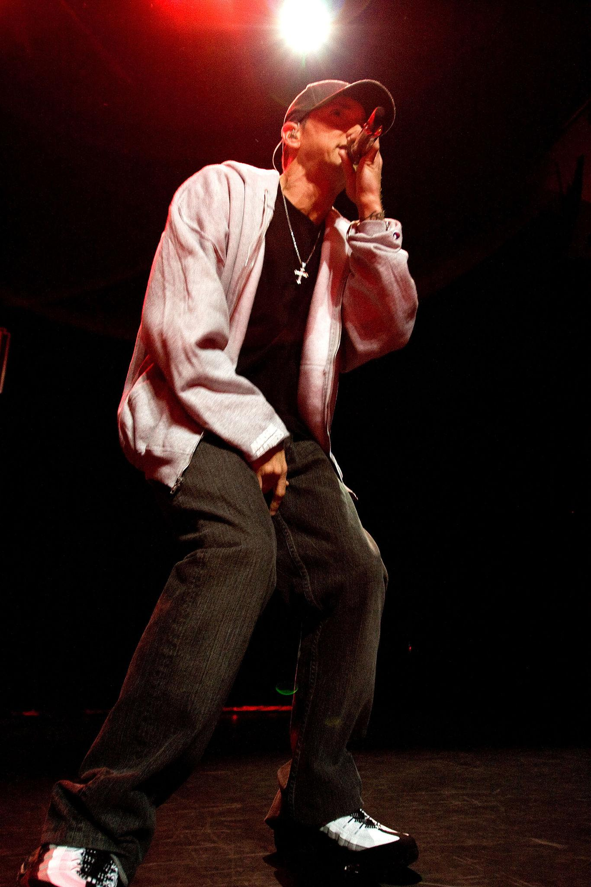
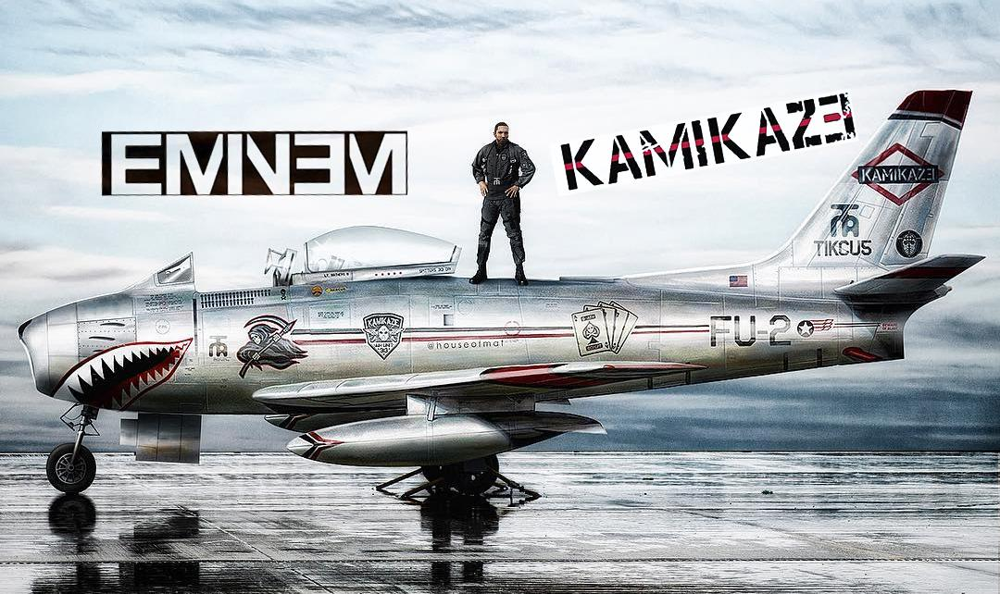

1988–1995
beginjaren

Start met rappen in Detroit en neemt deel aan battles in de underground scene.
12 november 1996
Eerste album

Release van Infinite (weinig succes, maar belangrijk begin).
23 februari 1999
Doorbraak

The Slim Shady LP komt uit en wint later een Grammy.
23 mei 2000
Wereldwijde bekendheid

The Marshall Mathers LP wordt een van de snelst verkopende rapalbums ooit.
26 mei 2002
Supersterfase

Release van The Eminem Show. Eén van zijn bekendste albums
8 november 2002
Film

Film 8 Mile verschijnt (2002)
23 maart 2003
oscar

Lose Yourself wint een Oscar in 2003.
2005–2007
Hiatus & problemen

Minder actief door persoonlijke en gezondheidsproblemen.
19 mei 2009
Comeback

kwam terug met twee goeie albums, Relapse (2009) en Recovery (2010).
15 december 2017
Nieuwe stijl & kritiek

Release van Revival, gevolgd door snellere, agressievere stijl.
31 augustus 2018
Moderne periode

Kamikaze (2018) was een verrassingsalbum waarin Eminem reageerde op kritiek.